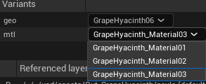
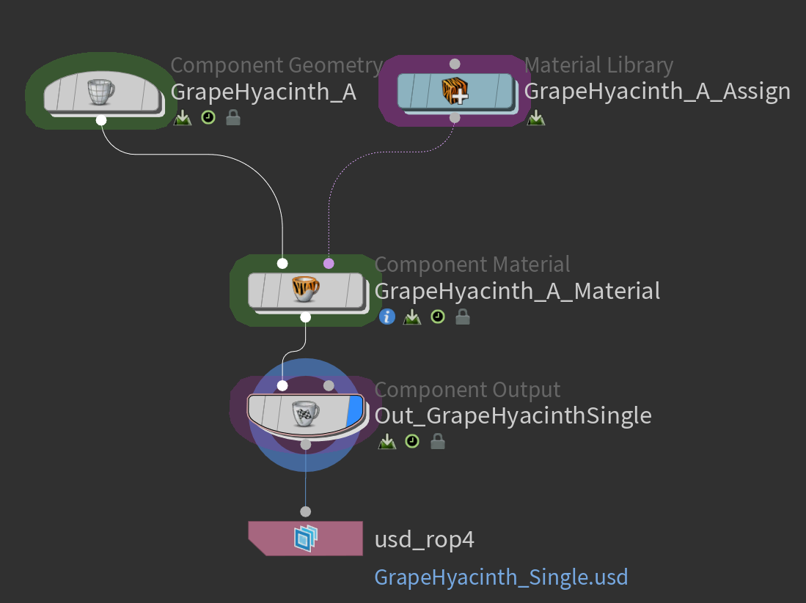
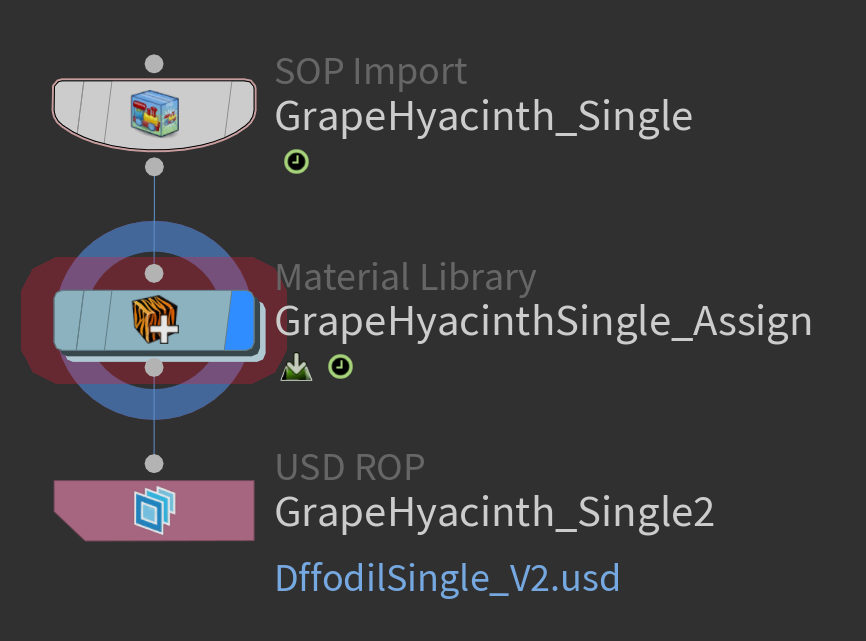

← 部落格 × Special Project | PART2


第 5 周
第 5 周计划：
-
在 Houdini 中测试有动画的 USD Variants
-
测试把有动画的 USD 汇入 Unreal
USD 材质（Houdini 到 Unreal）
动画网格
接著我用这种材质指定方式，把动画网格汇入 Unreal。问题一样：材质仍然没有自动指定到网格上。
Houdini Variants
Unreal 中的 USD 动画问题
另一个问题是，把有动画的葡萄风信子汇入 Unreal 后，动画出现闪烁破绽；在 USD Stage Editor 中切换 variants 时，动画也会消失，和上学期在 Unreal 测试时的问题一样。不过在 USD Actor Editor 中，variant 的网格和材质都能正确显示。

另一个尝试是用两种方法输出单一动画 USD 档：Component Geometry 和直接输出。结果用 Component Geometry 的没有指定材质，动画也有破绽；直接输出的 MaterialX 仍然无法自动指定，但动画是正确的。


Component Geometry
直接输出
直接输出 USD 档时，每个材质都有自己的几何快取。
Houdini 与 Unreal 中的水仙花 Instance
接著我试著把有动画的水仙花汇入 Unreal。水仙花仍然没有材质，FPS 也很低，大约 10，还出现警告：「Ray Tracing Geometry — Requested memory over budget 1.655 GiB / 400 MiB.」
用 Level Sequencer 播放动画时，我发现了几个问题。首先，打开 Level Sequence 要花很久；播放动画时还会掉影格。